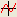
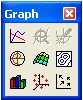

Graph Toolbar |
Buttons on the Graph toolbar insert 2D and 3D graphs. You can also type some graph operators using keystrokes. Note that Zoom and Trace are only active for 2D plot types. 3D plots require the mouse to zoom, rotate, and twist them.
Click on the  button in the Math toolbar to bring up the Graph toolbar, or choose Toolbars > Graph from the View menu.

| Graph Operators |
| Tooltips |
To find out what a button does, hover the cursor over the button until a tooltip shows the title and a description appears on the message line of the Status Bar.
Note that the tooltips are only documented for US keyboards. The Mathcad Keyboard Shortcuts page may show the shortcuts for your language keyboard.